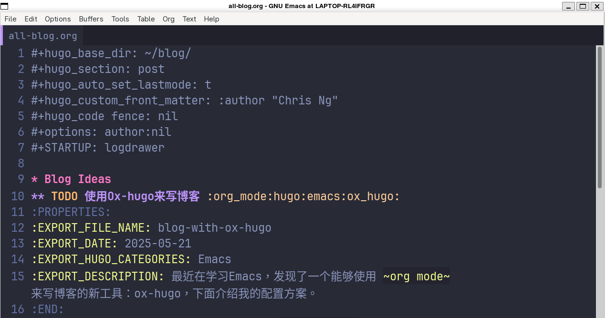
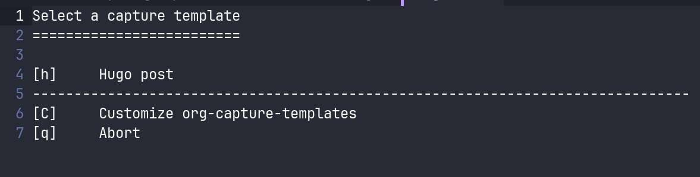
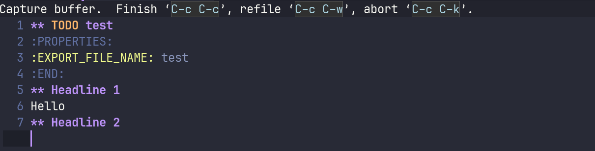
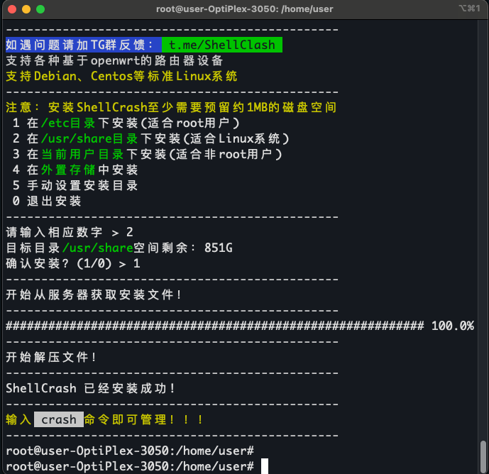
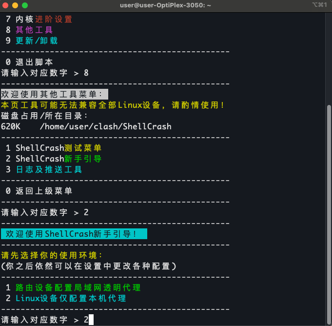
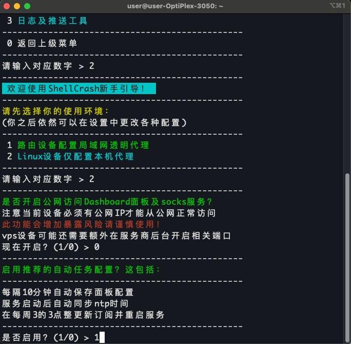
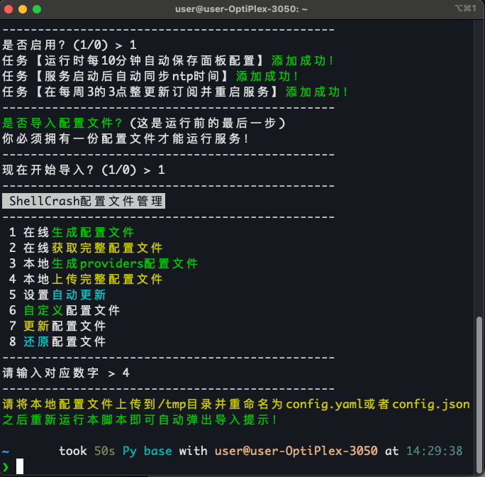
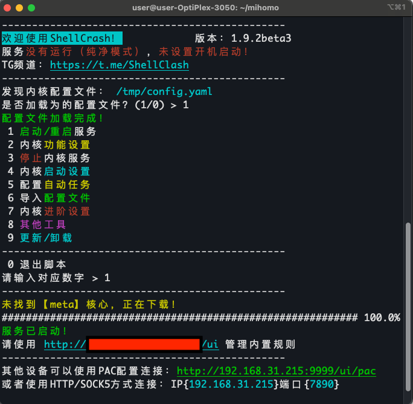
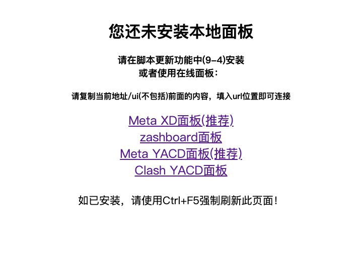
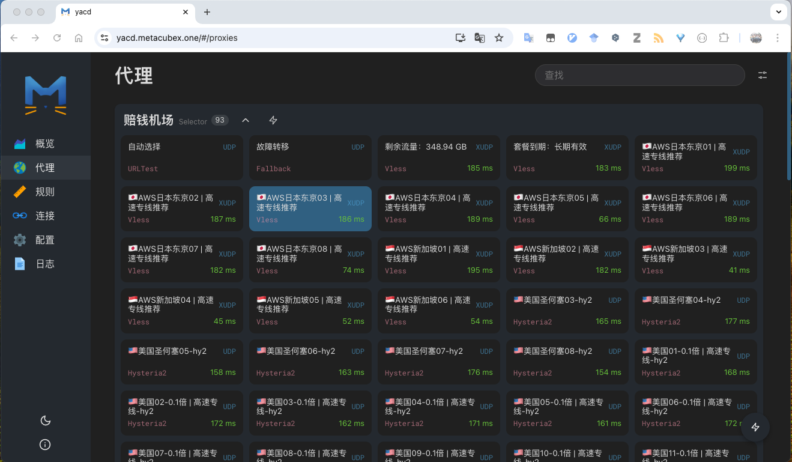

Table of Contents
#+hugocode fence: nil
1. Blog Ideas
1.1. DONE 使用Ox-hugo来写博客 org_mode hugo emacs ox_hugo
还记得大四准备考研的时候，收听了一档播客叫 Emacs Talk ，听了里面的一些大牛分享他们的经历，受到了很多感触。尤其是听到经济学博士Kathy的有趣经历后，开始学习了 Emacs 之路。在Emcas Talk的推荐下，开始跟着子龙老师学习Emcas，但是学习了一段时间后，发现Emacs在Windwos上的性能实在是太差了，于是渐渐就放弃了这个工具。直到我最近换了一台Mac Mini后，使用了Unix系统，重新开始学习Emacs。我现在是Win和Mac双持，为了让 Emacs 能够成为我的生产力工具，我也探索出了在Windows平台使用Emacs的更好方法，就是在Wsl下使用Emacs，并使用Git进行多平台同步。
1.1.1. 安装Hugo
在Mac下通常使用包管理器 brew 来安装，在终端运行以下的命令即可。
brew install hugo
在Arch Linux环境下，通常使用包管理器 pacman 来进行安装，在终端下运行以下的命令
sudo pacman -S hugo
安装完后，可以在终端输入以下的命令来查看是否正确安装。
hugo version
- 新建博客站点
首先进入一个你存放文件的路径，然后输入以下的命令
hugo new site blog cd blog git init git add . git commit -m "first commit"
- 安装hugo主题Even
在当前的git下添加git模块
git submodule add https://github.com/olOwOlo/hugo-theme-even themes/even
将
hugo-blog/themes/even/exampleSite/config.toml复制到站点的根目录下，替换根目录下的配置文件。 在博客根目录下运行以下的终端命令即可hugo server
然而，在我的实际测试中，发现因为版本原因报错，原本的
config.toml需要进行修改# paginate = 5 pagination.paperSize = 5
- 使用 Org mode 来写博客
首先安装
ox-hugo模块，在emacs的配置文件中加入以下配置(use-package ox-hugo :ensure t ;Auto-install the package from Melpa :pin melpa ;`package-archives' should already have ("melpa" . "https://melpa.org/packages/") :after ox)这里按照ox-hugo的推荐，使用一个org文件进行写博客，每一个org subtree 对应一篇博客，org文件需要提前创建。
(with-eval-after-load 'org-capture (defun org-hugo-new-subtree-post-capture-template () "Returns `org-capture' template string for new Hugo post. See `org-capture-templates' for more information." (let* ((title (read-from-minibuffer "Post Title: ")) ;Prompt to enter the post title (fname (org-hugo-slug title))) (mapconcat #'identity `( ,(concat "* TODO " title) ":PROPERTIES:" ,(concat ":EXPORT_FILE_NAME: " fname) ":END:" "\n\n") ;Place the cursor here finally "\n"))) (add-to-list 'org-capture-templates '("h" ;`org-capture' binding + h "Hugo post" entry ;; It is assumed that below file is present in `org-directory' ;; and that it has a "Blog Ideas" heading. It can even be a ;; symlink pointing to the actual location of all-posts.org! (file+headline "~/blog/all-blog.org" "Blog Ideas") (function org-hugo-new-subtree-post-capture-template))))在blog根目录下创建文件，
.dir-locals.el，内容如下。这个文件的作用是我们后续在修改org文件的时候，都会自动生成markdown文件。((org-mode . ((eval . (org-hugo-auto-export-mode)))))
需要在
all-blog.org文件中加入以下的配置
Figure 1: all-org.org 配置
- 创建你的第一篇博客
如果跟着上面的步骤，在Emacs下输入
M+x org-capture
在输入文字后，保存，即可自动生成markdown文件的博客。
需要注意的是，ox-hugo中的博客是以
to do的形式来判断是否为草稿文件。TODO：代表未发布的文章，在生产Markdown的元数据中，draft=true，只有在hugo server -D在会显示该文章。DONE：代表已完成的文章，DONE Date会被作为发表的时间戳，当然也可以自己指定，具体请参考 Org meta-data to Hugo front-matter
1.2. TODO 酒吧的最后一夜
2025年5月23日，完成汇报的我，如释重负。一人前往南亭吃饭，健身，结束时，想着要不到 TapTap 酒馆小酌一杯吧。这也不算是临时主意，前几天夜里便有打算，但是碍于麻烦，便搁置到那天。正好趁着周五结束汇报，无事一身轻松，小酌一杯也是个不错的选择。
于是，我独自一人来到期待已久的TapTap，刚开始还惶恐，我一个人进去喝酒会不会有点奇怪，但是都走到门口了，就进去看看吧。和以往不同的是，这一次就酒吧只有我一个人。依稀记得上次我到酒吧喝酒，是和didi、洛瑶一起，已经过去三四年了吧。上次去我们仨到北京路的一家酒吧，已经不记得名字了，只记得那位老板很健谈，与我们是老乡都是中山仔，调的酒很好喝，那天大家属于高考后的第一次相聚，谈得甚欢，最后卡着地铁末班车回去。那是我第一次和鸡尾酒，第二次是和杰前往深圳参加发达星期四的年会，但那次，严格上不属于酒吧。
Figure 2: 2022年六月：纪中三人组前往北京路酒馆喝酒
回归正题，碍于我一个人来酒馆，外面的小桌子坐着来聚会的学生们，与我格格不入。我坐在了窗台，点了杯9.9的荔枝笑尝尝。9.9的鸡尾酒，至今还没喝过这么便宜的，味道还算是凑合，有点可惜就是酒不是现调的，老板似乎也不太讲话，默默在吧台备餐，这不是我所期待的。喝完后，我又点了一杯长岛冰茶，这是我第一次喝这传闻中的“长岛冰茶”。长岛冰茶，这个名字，第一次是从杨千嬅的《可惜我是水瓶座》中了解到的，“拿来长岛冰茶换我半晚安睡”，后面的日子里，我对长岛冰茶也略有耳闻，第一次与didi去酒吧的时候，就想试试这杯传说中的长岛冰茶，可是当时担心还得回宿舍，喝醉了比较麻烦，当时当时手头也比较窘迫，点了杯更加便宜的鸡尾酒，当然，也不便宜，印象中也差不多百来块一杯，然而，已经那杯酒具体叫什么早已不记得，希望下次有机会故地重游吧。
这杯长岛冰茶，颜色似乎和我想象的有点差距，颜色不够深。初尝，意外地好喝，明知道由各种烈酒和可乐勾兑得来，酸甜又不会覆盖那点酒味，既有酒精的浓郁，又能尝到清爽的果酸。不愧是传闻中的失身酒，仅仅一杯，便足以令我兴奋。
Figure 3: 荔枝笑
Figure 4: 长岛冰茶
正巧当时佳哥在附近吃宵夜，于是和聪哥边过来陪我一起喝酒。随后，洋哥和于哥也过来了，由于这边的酒价格昂贵，于是一拍即合，前往广大商中的夜猫酒馆喝个够。我们便会宿舍洗漱，于是，佳哥、聪哥、洋哥、于哥、逸哥和我组成六人组，正式前往夜猫酒馆大干一场。这是我第一次前往真正意义上的酒吧，和颇有文青气质的北京路酒吧不同，这里灯光闪烁，夹杂着说唱音乐，坐满了来这里喝酒的学生们。我们找个位置坐下，用美团点了两个套餐，很快，酒来了，正式开启这令人沉迷的一夜。
于哥给我递了根烟，这应该是我第三次抽烟，还是有点生疏。我对抽烟🚬不反感，偶尔抽一次，不上瘾就没什么问题，平时也是出去玩偶尔抽一根。
Figure 5: 学着大人的样子抽烟
酒上齐后，我们便开始玩游戏。我初以为来酒吧就是来喝酒，原来是得配合游戏的，大话🎲，小姐牌。这些游戏，好久没有玩过，有些生疏，不过很快就回忆起了游戏规则。来到这里喝酒的同学们，不知道你们是否跟我一样生活充满着压力呢？这里霓虹闪烁，夹杂着嘈杂的音乐，在这里，可以卸下生活的伪装，在酒精的加持下，可以彻底地放飞自我。说真的，好久没有这么疯狂过，可以和隔壁桌的女生敬酒聊天，可以抱着酒桶到处乱跑，在这里，没有任何的规则，只要玩的尽兴。
Figure 6: 玩游戏时候的我们 1

Figure 7: 玩游戏时候的我们 2
1.3. DONE Linux服务器代理 (Web UI) Linux Clash
在服务器中，难免会遇到一些访问外网的需求。如果轻量使用的话，可以使用端口转发的方式，使用本地的代理，但是肯定会有些麻烦。因此，我经过一番搜索，找到了一个在服务器中能够轻松使用的代理，并且能够使用Web来切换节点，避免了远程连接没有ui的尴尬。
1.3.1. 安装 Crash
网上已经有大牛写好了一个脚本，我们直接下载就行了，具体请参考 eww:https://github.com/juewuy/ShellCrash/tree/dev
运行中根据指引进行安装即可
sudo -i #切换到root用户，如果需要密码，请输入密码 bash #如已处于bash环境可跳过 export url='https://fastly.jsdelivr.net/gh/juewuy/ShellCrash@master' && wget -q --no-check-certificate -O /tmp/install.sh $url/install.sh && bash /tmp/install.sh && source /etc/profile &> /dev/null
如果失败，请更换别的源进行下载，具体参考上面给出的链接，写的非常详细！ 接下来，按照指令进行安装：


1.3.2. 配置 crash
目前应该为 root 用户，我们可以直接在当前用户下输入 crash 直接进行进入配置，或者是退出当前账户切换到不同用户后执行，但是注意需要使用 sudo ，否则会报错
# 管理员用户下 crash # 普通用户下 # 管理员用户下，输入 exit 可切换为普通用户 sudo crash
进入脚本后，安装指令选择就好了，最后我们选择 导入本地配置文件 ，需要记住存放本地配置文件的目录 /tmp



1.3.3. 订阅链接获取
- 生成
config.yaml文件
我们使用的订阅链接通常为机场的订阅链接，因此，我们需要借助机场的订阅链接来获取配置文件，获取订阅链接有三种方法
# 方法 1 sudo wget -O ./config.yaml [机场订阅链接] # 方法 2 sudo curl -o ./config.yaml [机场订阅链接] # 方法 3 sudo curl [机场订阅链接] >./config.yaml
理论上来说，输入以上其中一条路径后，会在当前路径生成一个
config.yaml配置文件，我们需要将其拷贝到刚才我们记录的路径sudo cp ./config.yaml /tmp
然后在命令行中重新启动
crash即可sudo crash

加载配置后，按照指令输入
1即可启动，然后按ctrl或者command然后鼠标点击链接即可查看节点的信息，通常来说，选择第三个即可。
进入页面后，和Windows上clash的界面基本差不多。
